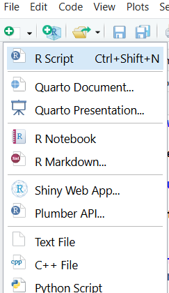

library(covid19.analytics)
library(dplyr)
library(ggplot2)
library(forecast)
library(readr)
library(skimr)
library(prophet)
library(tseries)Forecasting Demonstration using COVID-19 Data
This user guide will demonstrate how to attain data from COVID-19 using the covid19.analytics package and 2 methods of forecasting with the forecast package (using ARIMA) and the prophet package, a procedure used for forecasting created by Facebook. Before applying the concepts of time-series forecasting, here are a few notes and definitions to help in comprehending later steps in this guide:
- In practicality, “forecasting” and “prediction” are used interchangeably. Forecasting is prediction but with an emphasis on time-series data.
- Time series can be dissected into seasonality, level, trend, and noise.
- seasonality: “short-term cyclical behavior”
- level: “average value of the series”
- trend: “change in the series from one period to the next”
- noise: “random variation that results from measurement error or other causes”
- These components as seen in (2) can either be multiplicative or additive, which describes the relationship between the components to achieve the response value.
Shmueli and Polak (2024)
Open RStudio
If you have not yet installed RStudio or would like to update your version of RStudio, visit the following link: https://posit.co/downloads/. Create a new R script.

Install and Load Packages
Install the following packages1 if you have not already:
covid19.analytics- for the purposes of this guide, this package will be used to access various data sets about COVID-19
dplyr- dplyr is a R standard for creating data pipelines and transforming data frames to fit the desired format
lubridate- dates often require special packages for processing, such as noting the different possible forms that dates can come in (mm/dd/yyyy, yy/mm/dd, etc.). This belongs under the package
tidyverse
- dates often require special packages for processing, such as noting the different possible forms that dates can come in (mm/dd/yyyy, yy/mm/dd, etc.). This belongs under the package
ggplot2- popular package for data visualization. For exploration of other uses of
ggplot2, visit this cheat sheet, also included intidyverse
- popular package for data visualization. For exploration of other uses of
forecast- package that brings forecasting ability
readr- also belonging underneath
tidyverse,readrallows for easier manipulation of data frames
- also belonging underneath
skimr- package used to skim data frames for basic data exploration and suggestion of the forms of the data used. It gives summary statistics of each column in a data frame
prophet- package that allows for robust additive forecasting, created by Facebook
tseries- package which will be used for checking assumptions for time series data
To install packages, use the function install.packages() with the package name in quotation marks. Be sure to comment out this code afterwards so it doesn’t repeatedly install the code if you run all of the code at once.
For a quick temperature check on which packages have been added to the active session and their order, execute the search() function without any parameters. You can use this to validate that you have all of the packages listed above. The output below is of this exact book and may not reflect the packages in your active session.
[1] ".GlobalEnv" "package:tseries"
[3] "package:prophet" "package:rlang"
[5] "package:Rcpp" "package:skimr"
[7] "package:readr" "package:forecast"
[9] "package:ggplot2" "package:lubridate"
[11] "package:dplyr" "package:covid19.analytics"
[13] "tools:rstudio" "package:stats"
[15] "package:graphics" "package:grDevices"
[17] "package:utils" "package:datasets"
[19] "package:methods" "Autoloads"
[21] "package:base" Load in Data
In the covid19.analytics package, there are a few data sets that can be loaded in and used for easy examples. This user guide will demonstrate forecasting using its Canada data, accessed through covid19.Canada.data(). If you plan to use a different data set, make sure that the data suits the form required for time series analysis. Future sections will explain how to check or obtain the correct format.
covid19.Canada.data() is retrieved from this website. We will be using forecasting to predict the number of new cases over time in Ontario, Canada, so the following variables are of importance:
prname- The name of the providence that the data is located in
- type: character
totalcases- The number of total cases of COVID-19
- type: character
date- The date of the beginning of each week, with each observation including data accumulated over the week prior
- type: character
Note
We will have to do some type casting to assure that the variables are the correct types. The total number of cases should not be listed as character and will need to be changed into numeric.
df = data.frame(covid19.Canada.data())
head(df)
skim(df)skim(df) goes variable by variable in df and displays the summary statistics depending on the type of variable used. While each variable will show its completeness, a numeric variable will show the mean, standard deviation, and percentile values and a character variable will display the minimum number of characters in the string, the maximum number of characters, the number of unique strings, and a few other features. In the date column of the Canada COVID-19 data frame, there are 0 in n_missing, and the min and max values are both at 10. This would indicate that each row has a value for date and it follows some variation of “dd/mm/yyyy” given each has 10 characters. See the next section on what to do in case the format does not match.
If there is missingness in the data, visit this short guide.
Cleaning the Data
Date Format
Before being able to work with dates, you must have only one column for the date variable. If your data does not have date in one column and instead spreads out day, month, and year into multiple columns, you can use the dplyr package and the following step to combine columns:
df <- df %>% mutate(date=paste(year, month, day, sep = "-"))where df is the name of your data frame, date is the name of the new column that you are forming, the first three parameters of paste are the names of your existing columns of date data, and sep = "-" indicates that each field will be separated with a hyphen (Kurui (2025)). These should be modified to fit your use case.
Next, the package lubridate is best for working with dates in R. Once your date column properly includes the right content, it is important to ensure that they are in the correct format. For working with time-series data, it is best practice to use ymd (year-month-day) format. This format allows the data to be sorted to form chronological order.
df$date <- ymd(df$date)To explain how this format is best, let’s say dates were in the day-month-year format instead. Running a basic sort function would order by whether it is the first, second, third, etc. day of the month, then by what month it is, and then finally by year. The inverse would sort by year first, then month, then day. The end result is a list of date which are in proper chronological order.
Additionally, it makes more logical sense! The first item in a date sequence should be the most important, which is the year. Often, you can tell more about the context of a date given the year than the month or what day of the month it is.
“Europeans get it wrong. Americans get it wrong. Only computer scientists get it right.” - Dr. Chris Bourke, my Computing II professor, about date formats
Transforming Other Variables
Create a new data frame as a subset of your previous data frame, selecting only necessary columns. This makes the rest of the steps simpler when there is less information to comb through. The code below is an example of how to use dplyr to transform data to a workable state.
ontario_df <- df %>%
filter(prname == "Ontario") %>%
arrange(date) %>%
mutate(totalcases = parse_number(totalcases, na = c("-", ""))) %>%
filter(!is.na(totalcases)) %>%
mutate(new_cases = c(NA, diff(totalcases))) %>%
filter(!is.na(new_cases)) %>%
select(date,new_cases)In this example, we are filtering based on the province name “Ontario”, which selects all rows in the data frame that belong to Ontario, then sorting by the date. The number of total cases was originally listed as a character variable, so the next few lines are used to parse the number from totalcases and filtering out any missing values. If the variable you would like to analyze does not have this error, you do not need to include parsing.
Additionally, the question that we are interested in this case is not the total number of cases, but the number of new cases. To achieve this, a new column was formed, new_cases, which was then calculated taking the difference between observations of total cases. Sorting via date is important before this step to guarantee that the new_cases shows the difference between the correct dates and not arbitrarily which rows are positioned next to each other.
Lastly, select() is used to isolate which columns are being used later during forecasting.
Note
To check, use skim() and head() again to ensure that your data is in the correct form and that the transformation did not create any new holes or transformed the data in a way that was not intended.
Stationarity
Most statistical methods of forecasting require an exploration of the property stationarity, including ARIMA, which will be discussed later. In short, if data are stationarity, it means that the mean, variance, autocorrelation structure, and others stay constant over time (“Stationarity and Differencing of Time Series Data” (n.d.)). There are multiple ways to investigate this in a data set, both informally and formally. In this user guide, we will go over the Augmented Dickey-Fuller Test (ADF). Others can be found here.
Augmented Dickey-Fuller (ADF) test
The ADF test is a formal test to see if time series data is stationary, where the null hypothesis says the data is non-stationary and the alternative hypothesis says the data is stationary (Mushtaq (2011)).
adf_test <- adf.test(ontario_df$new_cases)
print("ADF Test:")
print(adf_test)The following output was obtained through running the code:
[1] "ADF Test:"
Augmented Dickey-Fuller Test
data: ontario_df$new_cases
Dickey-Fuller = -3.9025, Lag order = 6,
p-value = 0.0148
alternative hypothesis: stationaryAs we can see above, the p-value resulting from the test is less than \(\alpha = 0.05\), which means that we are 95% confident that we reject the null hypothesis, which stated that the data is non-stationary.
Forecast New Data
R Package forecast
The demonstration with the forecast package will be consistent with what is known as Autoregressive Integrated Moving Average (ARIMA). The forecast package is capable of doing other methods of time series forecasting, but we will focus on ARIMA for simplicity’s sake.
Decomposition
The first step is to decompose the data. This shows the breakdown of the time series data by the overall trend, seasonal shifts, and discerned randomness. Reviewing the notes at the beginning of the guide, this mirrors the components of time-series data (level, trend, seasonality, noise).
ts_cases <- ts(ontario_df$new_cases, frequency = 24)
d<-decompose(ts_cases, "multiplicative")
plot(d)
d<-decompose(ts_cases, "additive")
plot(d)Looking at these plots, Figures 1 and 2, can provide insight on the structure of your time data. In the case of the COVID-19 data on Ontario, Canada, we can see that there is a lot of noise with a consistent spike around the halfway mark when a new strain of COVID-19 caused an influx of cases.
{kind=link}
new_cases through the raw, observed data, overall trend, seasonality, and randomness with multiplicative components{kind=link}
new_cases through the raw, observed data, overall trend, seasonality, and randomness with additive componentsAdditive v. Multiplicative
The difference between additive and multiplicative time-series is illustrated by these graphs, but more clearly with the equations below.
Additive: \[y_t = Level + Trend + Seasonality + Noise\] Multiplicative: \[y_t = Level \times Trend \times Seasonality \times Noise\] The largest difference between the two is how the terms interact with each other (Shmueli and Polak (2024)). When seasonality tends to scale with the model, choose a multiplicative decomposition. In the terms of COVID-19 data, we would opt for multiplicative decomposition as research has allotted for better tactics to mitigate the transmission of the disease and scale back the classification from global pandemic.
Fitting ARIMA
Lastly, all that is left is to fit the model and forecast. The auto.arima() function takes in one vector, which will be the variable that you are trying to predict. Do not pass in your date or time variable. For the forecast() function, the three parameters used in the example are as follows:
object: the object created by theauto.arima()functionh: the number of periods for forecasting (weekly)model: which model was used (“Arima”, etc.)
more parameters for customization can be found in the forecast documentation.
fit <- auto.arima(ontario_df$new_cases)
summary(fit)
forecast_8 <- forecast(fit, h = 12, model = "Arima")
forecast_df <- data.frame(forecast_8)R Package prophet
When using prophet, it is good to keep in mind that is only for additive models, written that the user is able to “get a reasonable forecast on messy data with no manual effort” according to its documentation. True to its statement, there are only three functions required to set up a forecast: prophet(), make_future_dataframe(), and predict().
prophet()requires a data frame with two columns,dsandy. The names are required, and the code below shows how to rename a data frame to fit the requirements. Additionally, the rest of the parameters can be toggled, assumed false unless written as true. These areyearly.seasonality,weekly.seasonality, anddaily.seasonality.make_future_dataframe()requires the object created byprophet(), the number of periods, and what the periods are. In the example, there will be 12 periods with each period being a week.predict()requires the outputted objects of the previous functions.
Note
Optional but encouraged: using select() to isolate specific columns of the forecasted data frame. The columns selected will be used for plotting in the next section.
prophet_df <- ontario_df %>%
rename(ds = date, y = new_cases)
m <- prophet(prophet_df, yearly.seasonality = TRUE)
future <- make_future_dataframe(m, periods = 12, freq = "week")
forecast_p <- predict(m, future)
forecast_p_df <- forecast_p %>% select(ds, yhat, yhat_lower, yhat_upper)Plot
For comparison, plot both the forecasted and original data. You can copy the following code and change parameters to fit the naming convention of your own code. Both plots include the following:
ggplot()to initialize the plots being createdgeom_ribbon(), which graphs the bands of confidence around the forecasted data. The parameters ofyminandymaxdiffer between the two as the outputs of both forecasting packages are different.length.outshould match the parameterhwhen used in the functionforecast. Pay attention to the difference inxfor both as well.geom_line()with the color black is the same for both. This is your original raw data that will be used for visual comparison with the forecasted data.geom_line()with the color red is the point forecasted data. Note that the input forxshould be the same as it is ingeom_ribbon()for both whileyreflects the point estimate output of each method.labs()are for the axis labels and graph title. Change the strings to fit the description of your data.theme_minimal()is for aesthetic purposes only.
Code for plotting results from forecast
ggplot() +
geom_ribbon(data = forecast_df,
aes(x = seq(max(ontario_df$date), by = "week",
length.out = 12), ymin = Lo.95, ymax = Hi.95),
fill = "lightblue", alpha = 0.5) +
geom_line(data = ontario_df,
aes(x = date, y = new_cases),
color = "black") +
geom_line(data = forecast_df,
aes(x = seq(max(ontario_df$date),
by = "week",
length.out = 12),
y = Point.Forecast),
color = "red") +
labs(title = "Ontario Weekly COVID Cases Forecast (forecast)",
y = "New Cases",
x = "Date") +
theme_minimal()Code for plotting results from prophet
ggplot() +
geom_ribbon(data = forecast_p_df,
aes(x = ds, ymin = yhat_lower, ymax = yhat_upper),
fill = "lightblue", alpha = 0.5) +
geom_line(data = ontario_df,
aes(x = date, y = new_cases),
color = "black") +
geom_line(data = forecast_p_df,
aes(x = ds, y = yhat),
color = "red") +
labs(title = "Ontario Weekly COVID Cases Forecast (prophet)",
x = "Date", y = "New Cases") +
theme_minimal()Compare
Demonstration
These two plots are examples of ones generated using forecast then prophet. The largest difference that we can see is the way that each handles new predictions. Figure 4 using prophet overlays predictions on top of the current data whereas forecast exclusively predicts beyond the current data. This can be manually changed by editing the limits on time for prediction when plotting. In both, the confidence bands in blue showcase that the direction is not conclusive. This could be due to the fact that there are multiple strands of COVID-19 with different transmission rates that have appeared over time, adding more noise to the forecast. Additionally, there are less tests for COVID-19 as vaccines became more widely spread and it was seen as less of a threat as when it first was deemed a global pandemic. Many other external factors could contribute to the near erasure of high inflections in new cases.
Examining forecast more, the plot is more realistic simply because the point prediction does not go below zero. The previous trends in seasonality in prophet seems to be forced onto the new data, showing that there is going to be negative new cases, which is impossible since the measure of new cases does not take into account active cases. When someone tests positive for COVID-19, they are added to the new cases, but are not checked up on and removed from the count afterwards.
{kind=link}
forecast{kind=link}
prophetGeneral Guidance
When applying to other scenarios, remember forecasting is a function of existing data to predict future data. The more data that exists, the more narrow confidence bands will be. When examining the reliability of forecasting, it is best to be aware of the data that you are working with. The biggest issue seen in the demonstration was the predictions going below zero, which goes against the form of the new_cases variable. To explore issues like this, know the bounds of your data and whether or not forecasts break those hard boundaries. Forecasting always comes with the concern that you are extrapolating, therefore the reliability will always be in question as no one knows the future. The further you forecast from the original raw data, the more the reliability will decrease.
References
Kurui, Moses. 2025. “Tidyverse Time Series Analysis in r: Complete Guide. Codepointtech.com.” September 6. https://codepointtech.com/mastering-tidyverse-for-time-series-analysis-in-r/.
Mushtaq, Rizwan. 2011. Augmented Dickey Fuller Test. No. 1911068. Social Science Research Network. https://doi.org/10.2139/ssrn.1911068.
Shmueli, Galit, and Julia Polak. 2024. Practical Time Series Forecasting with r: A Hands-on Guide [3rd Edition]. Axelrod Schnall Publishers.
“Stationarity and Differencing of Time Series Data.” n.d. Accessed March 7, 2026. https://people.duke.edu/~rnau/411diff.htm.